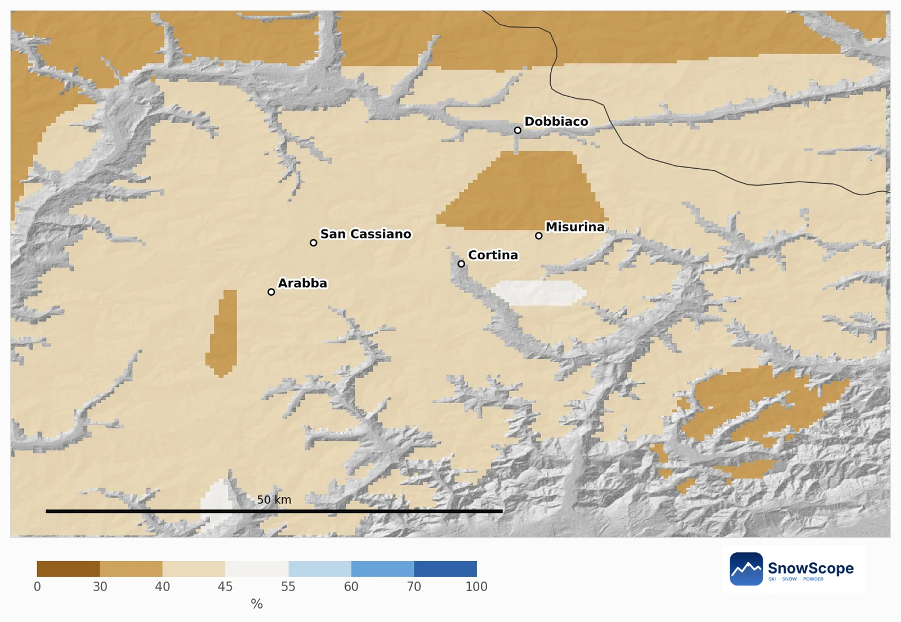
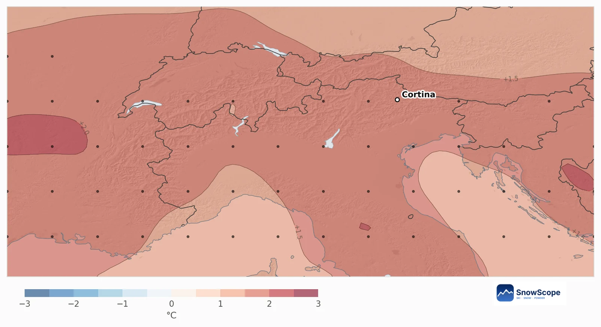
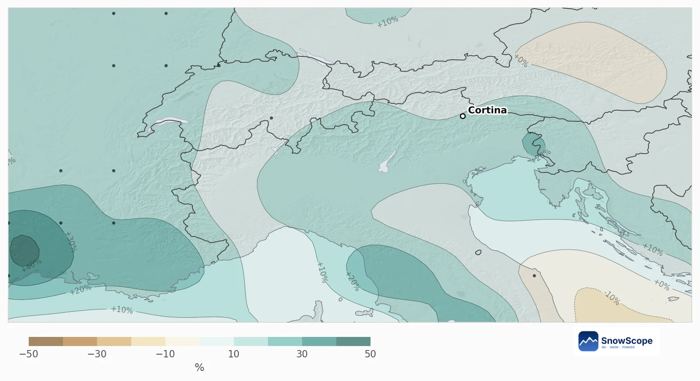
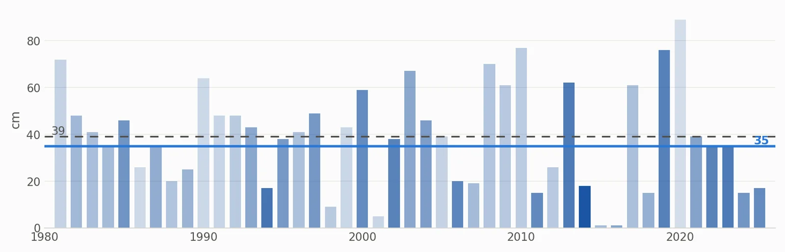

Cortina d'Ampezzo im Dezember 2026: noch wenig Schnee, Weihnachten sehr wahrscheinlich weiß
Cortina hat bisher nur eine Puderzuckerschicht: 2 cm am Gipfel (2739 m), an der Mittelstation nichts. Der Dezember sieht wärmer und etwas nasser aus als üblich, doch weiße Weihnachten an der Mittelstation bleiben sehr wahrscheinlich: 96 % in diesem Jahr.
Die Live-Schneeprognose für Cortina d'Ampezzo in der SnowScope-AppSchneehöhen, Pulverschnee-Alarme und 3D-Karte, gratis.
Schnee heute
Die neueste Karte zeigt 0 cm an der Mittelstation (1799 m) und 2 cm am Gipfel nach 5 cm in der letzten Woche. 80 % der 60 km rund um Cortina sind weiß, meist aber nur eine dünne Schicht von 1 bis 5 cm. Die nächsten sieben Tage könnten oben etwa 17 cm und an der Mittelstation 3 cm bringen.
Mehr oder weniger Schnee?
Auf 61 % der Bergfläche rund um Cortina gibt es kein klares Signal; die übrigen 39 % neigen zu weniger Schnee, vor allem um Misurina, Toblach und im Südosten. Kein Gebiet neigt zu mehr.
An der Mittelstation liegt die Chance auf mehr Neuschnee als in einem üblichen Dezember bei 42 %. Ein üblicher Dezember bringt dort 25 cm, der Ausblick liegt bei 23 cm; am 31. Dezember sind 39 cm üblich, der Ausblick liegt bei 35 cm, am wahrscheinlichsten zwischen 17 und 48 cm.

Was die europäische Prognose sagt
Die 51 Läufe machen den Dezember im Gebiet 1,7 °C wärmer als üblich, 80 % der Läufe sind wärmer, und den Niederschlag 12 % höher als in einem üblichen Dezember mit 70 mm, bei geteilten Läufen (53 % nasser).
Der Schnee folgt hier dem Niederschlag viel stärker als der Temperatur (Korrelation 0,96), deshalb landet ein wärmerer, aber nasserer Monat nahe am Üblichen.


Weiße Weihnachten?
In 42 der letzten 45 Winter lagen am 25. Dezember an der Mittelstation mindestens 5 cm Schnee, also 93 %. Gewichtet mit der diesjährigen Prognose liegt die Chance bei 96 %, mit üblichen 34 cm und einem Ausblick von 29 cm an diesem Tag: etwas weniger Schnee, aber weiß. Die ähnlichsten vergangenen Dezember sind 2014, 1994 und 2023.

Tipps für Skifahrer
- Weihnachten für mittlere und hohe Hänge ruhig buchen; die Talabfahrten brauchen eventuell Kunstschnee.
- In der 7-Tage-Prognose auf Südstaulagen achten: Sie bringen den Dolomiten die großen Schneefälle.
- Vor der Reise die Schneegrenze auf der SnowScope-Karte verfolgen.
Quellen und Nachweise
- ECMWF SEAS5 seasonal forecasts, Copernicus Climate Change Service (C3S) cds.climate.copernicus.eu/datasets/seasonal-postprocessed-single-levels
- ERA5 monthly averaged data, Copernicus Climate Change Service (C3S) cds.climate.copernicus.eu/datasets/reanalysis-era5-single-levels-monthly-means
Zu diesen Zahlen
Methode. Temperatur und Niederschlag: die saisonale Prognose des Europäischen Wetterzentrums (ECMWF SEAS5, 51 Läufe ab 1. November 2026, Abweichungen gegenüber den eigenen Rückprognosen 1993-2016, etwa 100-km-Raster). Schnee: Für jede Bergzelle von etwa 10 km nehmen wir unser Modell der Vergangenheit (46 Winter, höhenkorrigierte Schneehöhe) und das Wetter jedes Dezembers von 1981 bis 2025 (ERA5); vergangene Dezember, deren Temperatur und Niederschlag einem Prognoselauf ähneln, zählen mehr, und ihr Schnee ergibt die Chancen. Schnee heute: die SnowScope-Schneekarte (500 m). Ein Monatsausblick verschiebt nur die Chancen: Er sagt weder einen Sturm noch ein Datum voraus.
Diesen Bericht zitieren
Für Forschung, Lehre oder Presse: Zahlen und Grafiken sind unter CC BY 4.0 mit dieser Quellenangabe frei nutzbar.
SnowScope (2026), Cortina d'Ampezzo im Dezember 2026: noch wenig Schnee, Weihnachten sehr wahrscheinlich weiß, https://snowscope.app/blog/de/2026/11/cortina-december-2026-snow-outlook.html, abgerufen am 2026-11-10
SnowScope (Atlas Labs). (2026, November 10). Cortina d'Ampezzo im Dezember 2026: noch wenig Schnee, Weihnachten sehr wahrscheinlich weiß. SnowScope snow reports. https://snowscope.app/blog/de/2026/11/cortina-december-2026-snow-outlook.html
BibTeX
@misc{snowscope2026cortinadecember2026snowo,
author = {{SnowScope (Atlas Labs)}},
title = {Cortina d'Ampezzo im Dezember 2026: noch wenig Schnee, Weihnachten sehr wahrscheinlich weiß},
year = {2026},
month = nov,
howpublished = {\url{https://snowscope.app/blog/de/2026/11/cortina-december-2026-snow-outlook.html}},
note = {Published 2026-11-10 12:18 UTC; accessed 2026-11-10}
}· CC BY 4.0 · Methoden, Daten und Werkzeuge →
Cortina d'Ampezzo folgen
Gratis: eine Nachricht, wenn Neuschnee kommt, und jeden Morgen die Vorhersage.
Weitere Schneeberichte

Cortina d'Ampezzo auf drei Arten: Tofana, Faloria-Cristallo und Cinque Torri-Lagazuoi, mit 46 Wintern Schneedaten auf drei Höhen.

Ein Porträt von Bonneval-sur-Arc in der Haute-Maurienne: Steindächer, ein gesperrter Pass, ein kleines Skigebiet und erstaunlich viel Schnee, aus 46 vergangenen Wintern unserer Schneehistorie.

St. Anton und Ski Arlberg durch den Winter: die übliche Schneehöhe pro Monat auf drei Höhen, aus 46 vergangenen Wintern.